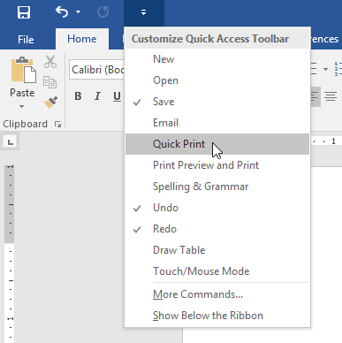
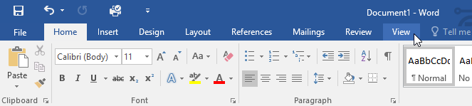
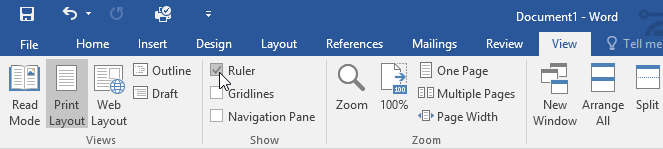
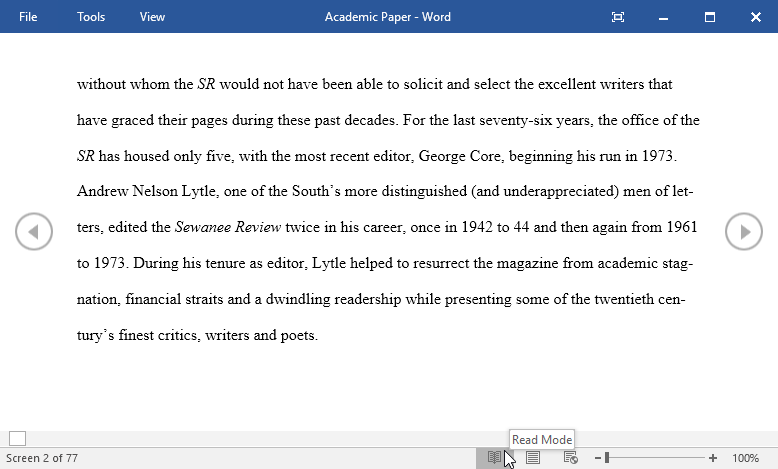
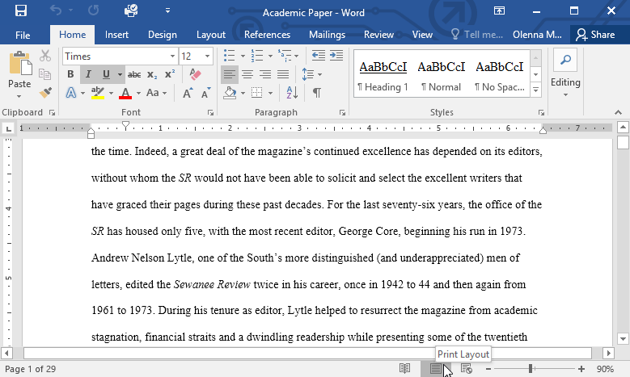
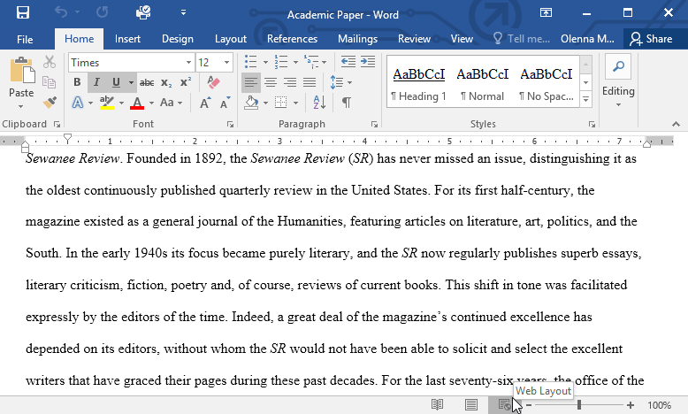
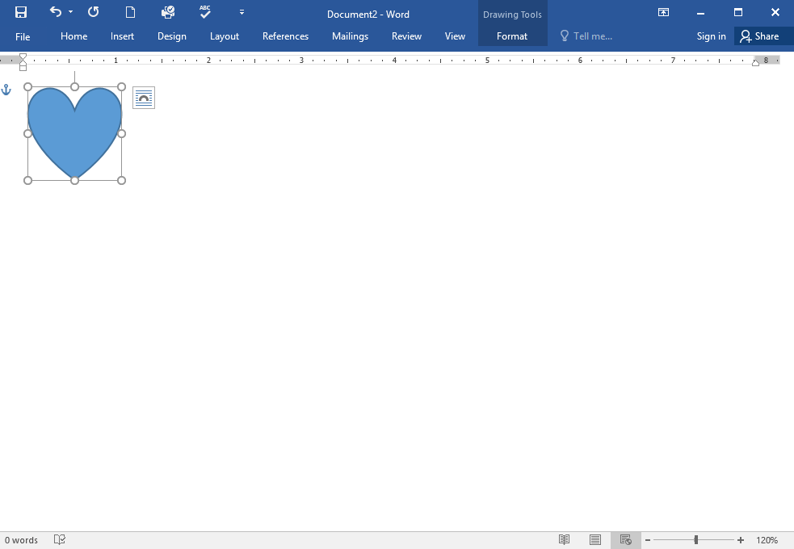

Introduction
Microsoft Word is a word processing application that allows you to create a variety of documents, including letters, resumes, and more. In this lesson, you'll learn how to navigate the Word interface and become familiar with some of its most important features, such as the Ribbon, Quick Access Toolbar, and Backstage view.
The Word interface
When you open Word for the first time, the Start Screen will appear. From here, you'll be able to create a new document, choose a template, and access your recently edited documents. From the Start Screen, locate and select Blank document to access the Word interface.

Click the buttons in the interactive below to learn more about the Word interface.
Working with the Word environment
All recent versions of Word include the Ribbon and the Quick Access Toolbar, where you'll find commands to perform common tasks in Word, as well as Backstage view.
The Ribbon
Word uses a tabbed Ribbon system instead of traditional menus. The Ribbon contains multiple tabs, which you can find near the top of the Word window.
Each tab contains several groups of related commands. For example, the Font group on the Home tab contains commands for formatting text in your document.

Some groups also have a small arrow in the bottom-right corner that you can click for even more options.

Showing and hiding the Ribbon
If you find that the Ribbon takes up too much screen space, you can hide it. To do this, click the Ribbon Display Options arrow in the upper-right corner of the Ribbon, then select the desired option from the drop-down menu:

- Auto-hide Ribbon: Auto-hide displays your document in full-screen mode and completely hides the Ribbon from view. To show the Ribbon, click the Expand Ribbon command at the top of screen.
- Show Tabs: This option hides all command groups when they're not in use, but tabs will remain visible. To show the Ribbon, simply click a tab.
- Show Tabs and Commands: This option maximizes the Ribbon. All of the tabs and commands will be visible. This option is selected by default when you open Word for the first time
Using the Tell me feature
If you're having trouble finding a command you want, the Tell Me feature can help. It works just like a regular search bar. Type what you're looking for, and a list of options will appear. You can then use the command directly from the menu without having to find it on the Ribbon.

The Quick Access Toolbar
Located just above the Ribbon, the Quick Access Toolbar lets you access common commands no matter which tab is selected. By default, it shows the Save, Undo, and Redo commands, but you can add other commands depending on your needs.
To add commands to the Quick Access Toolbar:
- Click the drop-down arrow to the right of the Quick Access Toolbar.

- Select the command you want to add from the menu.

- The command will be added to the Quick Access Toolbar.

The Ruler
The Ruler is located at the top and to the left of your document. It makes it easier to adjust your document with precision. If you want, you can hide the Ruler to create more screen space.
To show or hide the Ruler:
- Click the View tab.

- Click the checkbox next to Ruler to show or hide the Ruler.

Backstage view
Backstage view gives you various options for saving, opening a file, printing, and sharing your document. To access Backstage view, click the File tab on the Ribbon.

Click the buttons in the interactive below to learn more about using Backstage view.
Document views and zooming
Word has a variety of viewing options that change how your document is displayed. You can choose to view your document in Read Mode, Print Layout, or Web Layout. These views can be useful for various tasks, especially if you're planning to print the document. You can also zoom in and out to make your document easier to read.
Switching document views
Switching between different document views is easy. Just locate and select the desired document view command in the bottom-right corner of the Word window.
- Read Mode: This view opens the document to a full screen. This view is great for reading large amounts of text or simply reviewing your work.

- Print Layout: This is the default document view in Word. It shows what the document will look like on the printed page.

- Web Layout: This view displays the document as a webpage, which can be helpful if you're using Word to publish content online.

Zooming in and out
To zoom in or out, click and drag the zoom control slider in the bottom-right corner of the Word window. You can also select the + or - commands to zoom in or out by smaller increments. The number next to the slider displays the current zoom percentage, also called the zoom level.

Challenge!
- Open Word, and create a blank document.
- Change the Ribbon Display Options to Show Tabs.
- Using Customize Quick Access Toolbar, add New, Quick Print, and Spelling & Grammar.
- In the Tell me bar, type Shape and press Enter.
- Choose a shape from the menu, and double-click somewhere on your document.
- Show the Ruler if it is not already visible.
- Zoom the document to 120%.
- Change the Document view to Web Layout.
- When you're finished, your document should look something like this
-
Change the Ribbon Display Options back to Show Tabs and Commands, and change the Document View back to Print Layout